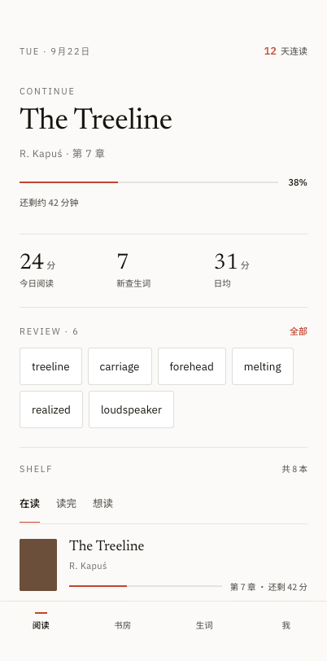
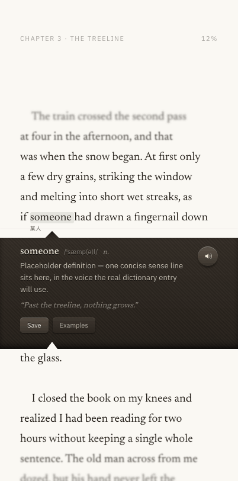
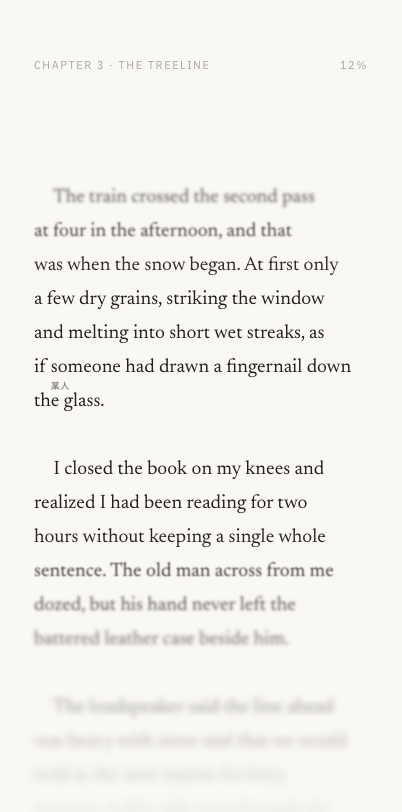
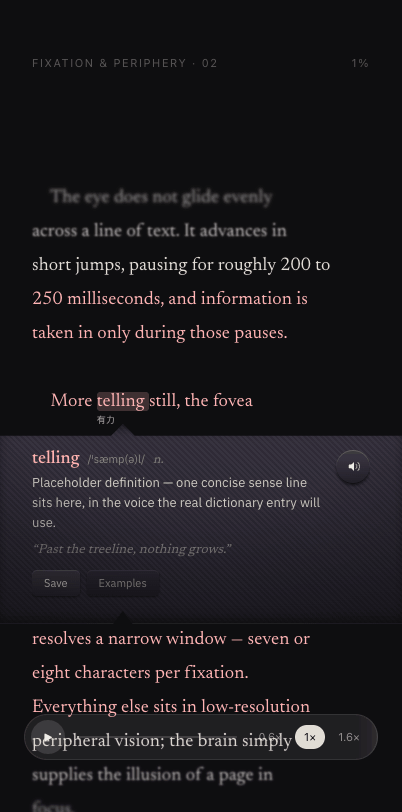

聚焦阅读 · MVP 设计与范围
Scope · UI specification · Agent drawer — 一份文档
v3 · 2026-10-14 · 合并自 设计文档 v2 与 MVP 方案 v0.1 · 源文件 聚焦阅读 App.dc.html · 技术架构见 MVP 技术架构图
产品定义：一个把注意力当作第一资源的英文阅读器。屏幕中央是一条固定的清晰带，其余文本按距离衰减；点任意单词从纸面裂开一条抽屉给出释义，查过的词在词下留一枚 9px 汉字脚注。
MVP 只做「阅读」：完整的阅读页（纸白 4a 的全部机制）加一个最基础的书架。夜读 1c 和自动带读留到下一版。书房、生词、我三个 tab 不做，底部标签栏也随之取消。整个 App 离线运行，没有账号，也不发任何网络请求。
它要验证两件事：① 焦点带能否让人读得更久、更专注；② 点词即查 + 词下脚注，能否让人不再跳出去查词典。内测时看三个数：单次阅读时长、每千词查词次数、关闭抽屉后 10 秒内继续滚动的比例。数据只记在本地日志里，由内测用户手动导出。
怎么读这份文档：每个界面一张实机截图，图上的红色编号对应右侧标注清单，清单里给出该部件的字号、颜色、间距与行为。章节末的表格是可直接落地的参数。B9 是给 Agent／自动化工具的机读附录（JSON），字段与正文一一对应。
结构：A 范围与方案（做什么、验收、数据、里程碑）· B UI 设计规范（每个界面的视觉与参数）· C Agent 抽屉与新交互。
A1 · 范围
- 首页：「阅读」tab 精简版（继续阅读 + 书架）
- 书籍导入：EPUB（无 DRM）与 TXT；内置 3 本公版书
- 打开书过场：抽出 → 展开 → 封面淡出 → 正文淡入
- 阅读页 4a 纸白：焦点带、渐隐遮罩、章节眉、进度
- 点词查义：裂纸抽屉、离线词典
- 9px 汉字脚注：查过的词在全书留注
- 阅读设置面板、阅读位置恢复
- 书房、生词、我三个 tab 以及底部标签栏
- 今日三格数据、连读天数
- 待复习词卡、复习与调度算法
- 档案员 Agent 与 LLM 推理
- 账号、跨设备同步、推送
- 主题编辑、书架多种摆法
- 词典例句（Examples 按钮先隐藏）、单词发音（隐藏发音键）
- 夜读 1c 主题、自动带读
留好向后兼容：每次查词都写一条 Lookup 记录（词、原句、书、位置、时间）。这张表以后可以直接作为生词 tab 和档案员记忆的数据源，MVP 阶段不必为它们多做任何界面。
A2 · 屏幕与导航
MVP 只有两个页面。阅读页的点击分三种：点中单词打开抽屉；抽屉开着时点任意处都是关抽屉；抽屉关着时点空白处，才切换顶部返回栏和底部工具条的显隐。


视觉与参数一律按本文 B3 执行：焦点带公式、渐隐遮罩、裂纸抽屉（330 / 250ms，grid-rows 0fr↔1fr）、上下尖角、皮革材质、9px 脚注脱离文档流。抽屉里的发音键和 Examples 按钮在 MVP 中隐藏，只保留 Save。
MVP 新增的只有两处：
阅读设置面板（新）
原型里的调参项转成面向用户的设置。轻点书页上方 30% 区域，面板从底部升起（不再用底部工具条和 Aa 键），材质沿用抽屉的皮革面，动效同抽屉（330 / 250ms）。点面板外或顶部把手收起。调节时正文实时响应，面板高度不超过屏高 44%，焦点带始终露在上方。
| 项 | 控件 | 默认 | 映射 |
|---|---|---|---|
| 聚焦模糊 | 开关（首行） | 开 | 关：所有行 blur 0、opacity 1，上下渐隐遮罩隐藏，全文清晰；清晰带 / 模糊强度 / 整句模式置灰。开：恢复焦点带公式 |
| 字号 | 三档 | 中 19.5 / 34 | 小 17.5 / 30 · 大 22 / 38；切换后按段落锚点保持位置 |
| 清晰带 | 滑杆 | 30% | focusPct 20–80 / 5 |
| 模糊强度 | 滑杆 | 7 | blurMax 2–14 |
| 整句模式 | 开关 | 关 | 非当前句 t += 0.18 |
A3 · 功能清单与验收
| ID | 功能 | 级 | 验收标准 |
|---|---|---|---|
| R-01 | 焦点带 | P0 | 公式与 v2 §3 一致；中端机上滚动稳定 60fps（掉帧 < 2%）；低端机自动降级为只衰减透明度、不做模糊 |
| R-04 | 点词查义 | P0 | 从点击到抽屉开始展开 ≤ 100ms；词形还原后，内置书目中单词的离线命中率 ≥ 98%；未收录时进入「未收录」态 |
| R-05 | 裂纸抽屉 | P0 | 时长、材质、尖角、入屏补滚动、关闭判定、「先收再开」全部按 v2 §3 表格执行 |
| R-06 | 9px 脚注 | P0 | 行高零变化（出现前后逐行 y 坐标误差 0px）；按词元 lemma 匹配全书同词；重启后仍然保留 |
| R-07 | 位置与进度 | P0 | 退出、杀进程或改字号后，焦点带内仍是同一段；章节眉的进度实时更新，最小显示 1% |
| R-09 | Save 收词 | P1 | 只把 Lookup.saved 置为 true，按钮切到「已存」态；数据留给以后的生词 tab 使用 |
| R-10 | 目录 | P1 | 列出章节，当前章朱红标记；点击后跳到章首，并把章首放进焦点带 |
| H-01 | 继续阅读 | P0 | 显示最近打开的书；剩余分钟 = 剩余词数 ÷ 230 |
| H-02 | 书架 | P0 | 按最近打开排序；筛选在读 / 读完；进度到 100% 时自动归入读完并记录读完日期 |
| H-03 | 导入 | P0 | 支持 EPUB 2/3（无 DRM）与 UTF-8 TXT；300 页的书 3 秒内可以开读（先解析首章，其余在后台处理）；失败时说明原因 |
| H-04 | 打开书过场 | P0 | 220 → 460 → 300 → 320ms 四段；从书架行封面的几何位置起飞，返回时落回原位 |
| H-05 | 删除书 | P1 | 左滑删除并二次确认；该书的 Lookup 记录一并删除 |
| S-01 | 设置面板 | P0 | 全部设置实时生效并持久化；字号切换后阅读位置不丢 |
A4 · 本地数据模型
| 表 | 字段 | 说明 |
|---|---|---|
| Book | id · title · author · cover · color · format · wordCount · status · pct · addedAt · openedAt · finishedAt | status 取值 reading / done |
| Chapter | bookId · idx · title · paras[] · wordStart | 导入时预先切好段与句 |
| Position | bookId · chapter · para · sentence · updatedAt | 锚点记到句，与字号无关 |
| Lookup | id · bookId · surface · lemma · zh · phonetic · sentence · loc · at · saved | 脚注来源；也是日后生词 tab 与档案员记忆的数据源 |
| Settings | fontSize · focusPct · blurMax · sentenceMode | 键值存储 |
| dict.db | word · phonetic · pos · gloss · forms → lemma | 只读，随安装包分发 |
脚注规则：打开一本书时，取这本书 Lookup 表里所有 lemma 组成 seen 集合，正文中凡是 lemma 在集合里的词都挂上脚注。脚注文字取 gloss 的首义，超宽时用省略号截断。
A5 · 技术方案要点
建议 Web 技术栈 + 原生壳：React + TypeScript 写界面，Capacitor 打包成 iOS / Android 应用。理由是原型已经用 CSS 实现了逐行 blur、grid-rows 抽屉和 clip-path 尖角，这些可以一比一迁移，风险集中在滚动性能这一处，并且能单独测量。
| 环节 | 选型 | 要点 |
|---|---|---|
| 界面 | React + TS · Vite | 正文行不经过 React 重渲染，由阅读引擎直接写 style |
| 壳 | Capacitor | 文件选择、触感、SQLite 走插件 |
| 存储 | SQLite（插件） | 用户库与词典库分开存成两个文件；原始书籍文件放在应用沙盒里 |
| 导入 | JSZip + DOMParser | 在 Web Worker 里解析 OPF / spine → 段 → 句，主线程不卡 |
| 词典 | ECDICT 精简包 | 开源英汉词典（MIT，上线前需法务确认）。按词频截取常用词（建议 6 万条上下）；用它的词形变化字段建 forms → lemma 反查表 |
| 焦点带 | rAF 合帧 + 可见行窗口 | 只计算视口上下各 1 屏内的行；blur 量化到 0.5px 一档，没变化就不写；空闲帧跳过 |
主要风险：低端 Android 上逐行 filter: blur 会掉帧。第一阶段先做性能探针：如果达不到 R-01，就改用两层静态模糊遮罩（上 / 下）配合逐行 opacity。如果仍达不到，阅读页改用原生渲染（iOS 用 TextKit，Android 用 RenderEffect），其余部分继续用 Web。
A6 · 里程碑
A7 · 待确认
| 问题 | 本方案的默认 |
|---|---|
| 首发平台 | iOS 与 Android 同时出内测包 |
| 脚注作用域：只在本书内，还是跨所有书 | 本书内 |
| 脚注是否只保留最近 N 个词 | 不限，内测后再定 |
| 多义词取哪一义 | 按词性取首义；按语境选义留到后续版本 |
| 内置的 3 本公版书 | 待定（需要有版权可用的英文原文） |
| 内测指标的采集方式 | 本地日志 + 手动导出，不接任何统计服务 |
B1 · 信息架构
今日三格数据
待复习词卡
完整书架（三筛选）
会话线程
它替你做的
档案员权限
今日复习入口
词条 + 掌握标记
四项累计
设置列表
阅读页不在标签栏内：它由「阅读」tab 里的继续阅读区或书架任一本书展开进入，返回即回到来处。定稿组合为 7a 主页 + 4a 阅读页（纸白）／1c 阅读页（夜读）。5a/6a/6b/6c 为书架摆法备选。
B2 · 设计语言
| 字族 | 用途 | 字重 |
|---|---|---|
| Newsreader | 正文英文、书名、页面大标题、例句（斜体） | 400 / 500 |
| IBM Plex Sans | 英文标签、音标、数字、章节眉、百分比 | 400 / 500 |
| Noto Sans SC | 全部中文界面文案 | 400 / 500 |
| PingFang SC | 词下 9px 汉字脚注首选（回退 Noto Sans SC / Hiragino Sans GB） | 500 |
| 角色 | 4a 纸白 | 1c 夜读 | 7a 编辑式 |
|---|---|---|---|
| 底 | #faf8f3 | #0e0e10 | #fbfaf8 |
| 正文墨 | #221f1b | #f2ede4 | #16150f |
| 次级文字 | #221f1b 60% | #f2ede4 60% | #16150f 62% |
| 强调 | #d8b56a | #ffb4b4 | #c1452f |
| 卡面/抽屉 | #2c2620 | #2c2620 | #ffffff |
| 分隔线 | #221f1b 10% | #fff 8% | #16150f 10%/7% |
栅格与尺寸：主页左右留白 24px，阅读页 34px（1c 32px）；分节用 1px 细线而非卡片描边；可点区域最小 44px；底部标签栏 74px。
对比度：10–13px 小字不低于 4.5:1（浅底 62%、深底 60% 透明度），大字号标题与数字放宽到 3:1；9px 汉字脚注用 500 字重补偿字号。
B3 · 阅读页 4a（纸白 · 定稿）
滚动容器 inset:0; padding:45% 34px，正文 Newsreader 19.5px / 行高 34px / #221f1b。

ramp = max(1, 屏高 / 2 − half)
d = |行中心 − 视口中心|
t = clamp((d − half) / ramp, 0, 1)
4a: blur = blurMax·t, opacity = 1 − 0.85t
1c: blur = blurMax·t, opacity = 1 − 0.92t
| 抽屉机制 | 参数 |
|---|---|
| 展开 | display:grid 的 grid-template-rows: 0fr → 1fr（splitG / collapseG），不用 max-height 硬编码 |
| 时长 | 开 330ms / 关 250ms；内容 riseIn 250ms（延迟 0），关时内容淡出 = 关时长 × 0.55 |
| 材质 | 底 #2c2620；45° 细斜纹（白 2.2% / 黑 2.8%，每 2px）+ 纵向渐变 #332c25→#241f1a；上下内阴影 inset 0 ±10px 13px -8px rgba(0,0,0,.95)，下沿纸边高光 0 1px 0 #fff 55% |
| 入屏 | 抽屉底边超过容器底 −70px 且溢出 > 8px 时，容器 smooth 滚动补足 |
| 关闭 | 点抽屉、点别处、或主动滚动（500ms 内判定）；收起动画期间拦一帧滚动避免抖动。点另一个词 = 先收再开（延迟 = 关时长） |
| 副作用 | 词进入 seen 集合，此后该词在全文永久显示 9px 汉字脚注 |
B4 · 阅读页 1c（夜读聚光 · 定稿）
与 4a 同一套抽屉与脚注机制，差异在景深强度、高光着色与自动带读。

B5 · 主页 7a（现代化 · 主线）
放掉布纹与烫金，改为平面色块 + 排版驱动：纸白底、细线分栏、朱红一点强调。四个 tab：阅读 / 书房 / 生词 / 我。

Agent 的人格是档案员：只记录与检索，不主动说话。这条设定决定了形态——顶部是检索框而非输入框，产出都标注「不推送」。

| 权限 | 默认 |
|---|---|
| 记录阅读位置与时长 | 开 |
| 记录查词 | 开 |
| 记录你说过的话 | 开 |
| 跨书归纳主题 | 关 |
| 允许主动提示 | 关 |


B6 · 动效规范
全 App 只用一条曲线：cubic-bezier(.42,0,.58,1)（拟物 iOS）。打开书的飞行层四段时序：抽出 220 → 展开 460 → 封面淡出 300 → 正文淡入 320ms，阴影固定 0 18px 40px rgba(0,0,0,.5)。
| 动作 | 时长 | 属性 |
|---|---|---|
| 抽屉展开 / 收起 | 330 / 250ms | grid-template-rows 0fr↔1fr |
| 释义升起 / 淡出 | 250 / 138ms | opacity + translateY |
| 书抽出（离架） | 220ms | top −30px |
| 书展开满屏 | 460ms | left / top / width / height → 0,0,402,812 |
| 封面淡出 → 正文淡入 | 300 / 320ms | opacity 交叉 |
| 书脊归位（返回） | 300ms | 几何回原位 |
| 开关滑块 | 220ms | left 3px ↔ 18px |
B7 · 可调参数
| 参数 | 默认 | 范围 | 作用 |
|---|---|---|---|
| focusPct | 30% | 20–80 / 5 | 清晰带占屏高比例（运行时另限 10–90） |
| blurMax | 5px | 2–14 | 最远处模糊半径（未设时 4a 取 7、1c 取 9） |
| openMs / closeMs | 330 / 250ms | 120–900 / 80–800 | 抽屉开合时长 |
| contentMs / DelayMs | 250 / 0ms | 80–800 / 0–400 | 释义内容动画与延迟 |
| openEasing | 拟物 iOS | 6 选 1 | 全局曲线（产品固定为拟物 iOS） |
| accent | #ffb4b4 | 色板 | 1c 焦点行高光色 |
B8 · 状态矩阵
| 对象 | 状态 | 触发 |
|---|---|---|
| 正文行 | 清晰（t=0）／衰减（0<t<1）／近隐（t=1）／带读高亮 | 滚动、带读推进 |
| 单词 | 默认／点中高亮／已查（带 9px 脚注） | 点击 |
| 抽屉 | loading（预留接口态）／ready／closing | 点词 / 关闭 |
| 飞行层 | spine → out → full → page（返回 back） | 点书 / 返回 |
| 词卡 | 英文面／汉字面 | 点击翻面 |
| 生词条目 | 待复习／已掌握 | 点行切换 |
| 书架列表 | 在读 4／读完 2／想读 2 | 筛选 |
| 书房 | 记忆／会话／档案员 | 分段切换 |
| 主题 | 纸白／夜读（阅读页与书架共用） | 切换胶囊 |
B9 · 机读附录（给 Agent）
下面的 JSON 与正文一一对应，可直接作为生成代码或接口字段的输入。文档中每个图文卡片都带 data-screen-id（如 7a.study.memory），与 screens.*.figure 的文件名一致。
B10 · 待办
- 真实词典接口（现为约 90 词的内置离线表 + 占位释义），抽屉已预留 loading 态。
- 脚注保留策略：是否只留最近 N 个词；长按整句是否也给一条脚注。
- 书架方案定稿；7a 的平面封面与 5a/6x 的布纹烫金语言需收敛为一套。
- 复习算法、设置项的二级页面、跨设备同步、生词本边标。
C1 · Agent 抽屉（旁注）
原型见 App 文件 10a。完整开发说明（数据模型、AI 接口、任务 A1–A10）见 AGENT_DRAWER.md；是否进入首版以该文档的范围为准。
| 部分 | 规格 |
|---|---|
| 打开手势 | 在书页上按住左滑：书页跟手左移 x = −p·(0.95·W − 60)（打开时左侧固定露出 60px 书页；手机 402px 上与 0.8·W 相同，iPad 上不遮挡抽屉）并缩小到 scale 0.9、圆角 22px、阴影加深；抽屉从右侧 12% 视差滑入，透明度 .3→1。松手速度 > .35 或进度 > 45% 吸附打开。420ms cubic-bezier(.22,.8,.24,1) |
| 关闭 | 右滑，或点露出的书页边缘 |
| 标题区 | 「历史 N · 章节」眉 + 衬线标题 + 下拉箭头；点整块开 / 关历史面板（下落卡片：本书对话列表 + 「新对话 · 从当前句开始」） |
| 当前句 | 小号阅读视图（Newsreader 13.5px）显示本页全文，中线所在句高亮；滚动或点选切换 |
| 消息 | 你的问题：右侧黑底气泡，上方斜体小字引用所问句。回答：「● 旁注」标签 + Noto Serif SC 14.5/1.8 正文 + 出处胶囊 |
| 底部 | 横滑快捷问题 + 圆角输入框 + 圆形黑色发送键 |
| 色彩 | 底 #f5f5f3，卡 #fff，强调只用 #111；不引入其它颜色 |
C2 · 选中文字 → 问旁注
| 步骤 | 行为 |
|---|---|
| 长按 | 在词上按住 380ms 选中该词（可震动 8ms）；移动超过 8px 视为滑动，不触发选中 |
| 扩选 | 不松手继续拖动按词扩选，命中取最近的词（纵向权重 ×4，优先同一行） |
| 微调 | 松手后两端出现黑色拖柄（2px 竖线 + 12px 圆点），可拖动调整起止 |
| 选区样式 | 背景 rgba(34,31,27,.16)；选区所在行取消模糊 |
| 屏蔽系统菜单 | -webkit-touch-callout:none、拦截 contextmenu / selectstart；原生端需关闭系统编辑菜单（iOS UIEditMenuInteraction / canPerformAction） |
| 浮出按钮 | 黑色胶囊「● 问旁注」，高 40px；位于选区上方 56px，空间不足时放到下方；水平居中并夹在屏内 |
| 点按钮 | 抽屉推开；选中文字作为引用卡片放在输入框上方（可 × 移除），快捷问题换成针对选段的问题，输入框获得焦点；当前句视图变淡。发送后引用随问题一起显示 |
| 取消 | 轻点书页任意处；或直接左滑（同时打开抽屉） |
C3 · 阅读设置面板 · 交互优先级
设置项与默认值见 A2「阅读设置面板」。书页上的一次轻点按以下顺序处理：
| 顺序 | 条件 | 结果 |
|---|---|---|
| 1 | 有选区 | 取消选区 |
| 2 | 点在书页上方 30% | 设置面板从底部升起 |
| 3 | 点中单词 | 裂纸抽屉查词 |
| 4 | 面板 / 抽屉已打开 | 关闭 |